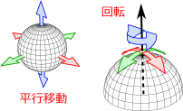
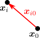
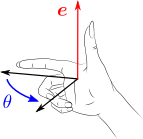
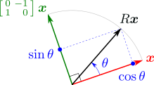
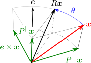
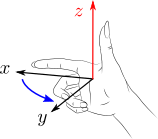
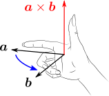

剛体の運動方程式を求めたい（前編）。
この章からは、「回転するこま」や「床を転がるボール」といった、剛体の運動を扱う。剛体とは、大きさを持っており、かつ、変形が無視できる物体のことである。前章までは、質点（＝大きさを無視できる物体）を主に扱ってきたが、その理解をもとに、大きさを持つ現実的な物体へと議論を進めていくわけである。
剛体の運動方程式(1)は成分が多すぎる→自由な座標を考える
知りたいのは、剛体の運動を求める方法である。ここで、剛体を、無数の質点（＝質点要素）の集合とみなせば、前章までの質点の理論が援用できそうである。全ての質点要素の運動を決めれば、剛体の運動も決まるというわけである。質点要素
𝒙𝑖
（
𝑖
は質点要素を区別するラベル）に対する運動方程式は、これまで同様、外力
𝒇𝑖
と拘束力
𝒇c𝑖
を用いて以下の形になる：
⎡⎢
⎢⎣𝑚1𝑚2⋱⎤⎥
⎥⎦⏟___⏟___⏟𝑀⎡⎢
⎢⎣¨𝒙1¨𝒙2⋮⎤⎥
⎥⎦⏟¨𝑿=⎡⎢
⎢⎣𝒇1𝒇2⋮⎤⎥
⎥⎦⏟𝑭+⎡⎢
⎢⎣𝒇c1𝒇c2⋮⎤⎥
⎥⎦⏟𝑭c(1)
外力
𝑭
は重力などの既知の力である。拘束力
𝑭c
についても、第8章の【8.2-注4】で見たように、拘束条件が与えられれば書き下すことができる。
質点要素
𝒙𝑖
に課せられる拘束条件は、「物体が変形しない」即ち「質点要素間の距離が一定」である：
𝐺𝑖𝑗≡|𝒙𝑖−𝒙𝑗|=const.(2)
第12章で扱うように、剛体自体にも拘束がかかっている場合には、それも拘束条件に加える必要がある。これにより
𝑭c
が求まるので、運動方程式(1)が確定する。よってし、全ての質点要素の時間発展
𝒙𝑖(𝑡)
を、少なくとも原理的には、計算することができる。
しかしこのままだと、無数にある質点要素の全てについて時間発展を追う必要があり、直接解くのは難しそうである。そこで変数の数を減らすため、第9章のように、運動方程式(1)を自由な座標を用いたものに書き換えるという方針で考えることにしよう。自由な座標は、直感的には、平行移動と回転に分離できそうである。となると、回転を表す自由な座標が分かれば良いわけだが、より扱いやすい自由な「速度」から考えるのが良い。というのも、自由な「座標」は、拘束条件を満たすあらゆる状態を考慮する必要があるのに対し、自由な「速度」は、変化できる方向を考えるだけで済むからである。
以上を踏まえてこの章では、剛体の自由な座標がどのようなものになるかを、剛体の位置と回転に分離するという方針で、以下のように議論する：10.1剛体の位置と回転を分離する10.2回転の自由な速度：角速度ベクトル 𝝎 10.3回転の自由な座標本来の目的は、剛体の運動方程式(1)を自由な座標（または自由な速度）で表すことであるが、これは次の第11章で行う。
10.1剛体の位置と回転を分離する
拘束条件(2)から、自由な座標を求めたいのだが、いきなりは難しい。この節では第1段階として、剛体の状態を決めるには、「剛体上の1点
𝒙0
」と「回転行列
𝑅
」を与えればよいことを見る。
𝒙0
は剛体の位置を表し、
𝑅
は剛体の向きを表す。
10.1.1剛体の自由度は 6 だろう
剛体を構成する質点要素
𝒙𝑖
は非常に多いが、一方で、拘束条件
𝐺𝑖𝑗
の数も膨大である。そのため、自由な座標の成分の数（＝自由度）は少なくなっていると期待できる。実際、以下の【10.1-注1】のように、自由度が
6
しかないことが推測される（数学的な議論は10.2節で行う）。この程度であれば、自由な座標を求めて、運動方程式の形まで持っていけるのではないだろうか。
【10.1-注1】剛体の自由度は 6 だろう

剛体の自由な座標が6自由度であることは、右図のように地球儀を例にとって考えることで推測できる。まず、地球の中心位置の取り方として平行移動の
3
自由度（右図左）。その後、地軸の周りに任意の角度回転させることができるので、
+1
自由度（同図右の青矢印）。最後に、地球の中心を固定したまま地軸を倒していくことで、地軸を任意の方向に傾けることができるので、さらに
+2
自由度（同図右の赤・緑矢印）。よって、平行移動の3自由度と回転の3自由度、合わせて
6
自由度が見つかった。逆に、これら
6
つの量を決めると、地球の位置・姿勢は一意的に決まりそうである。
10.1.2剛体の配置は 𝒙0 と 𝑅 で決まる：式(6)
剛体上の任意の1点
𝒙0
に着目すると、これは剛体を動かすことにより任意の値を取り得るので、自由な座標の一部として採用してよい。なお、
𝒙0
は剛体とともに動いていればよく、文字通り剛体上にある必要はない（例えばドーナツ型の剛体の場合、その中心を
𝒙0
にとってもよい）。

残りは、回転に対応する自由度である。まず、拘束条件(2)を、
𝒙0
を基準にした相対座標
𝒙𝑖0≡𝒙𝑖−𝒙0
（右図）に関する式として書き直すと、以下のように簡単になる：（導出は以下の【10.1-注2】）
𝒙T𝑗0𝒙𝑇𝑖0=const.(3)
この式を、
𝒙𝑖0
を未知数とする1次方程式とみなせば、
𝑗=1,2,3
と変えて3本集めれば、
𝒙𝑖0
の3つの成分が決まる。即ち、
𝒙10,𝒙20,𝒙30
さえ分かれば、全ての
𝒙𝑖0
が確定する。よって、この3つのベクトルの中に、回転の情報は全て含まれることになる。
実際にやってみよう。式(3)において
𝑗=1,2,3
ととれば、以下の3本の連立1次方程式が得られる：（最右辺は
𝑡=0
での値）
⎡⎢
⎢
⎢⎣𝒙T10(𝑡)𝒙T20(𝑡)𝒙T30(𝑡)⎤⎥
⎥
⎥⎦𝒙𝑖0(𝑡)=const.=⎡⎢
⎢
⎢⎣𝒙T10(0)𝒙T20(0)𝒙T30(0)⎤⎥
⎥
⎥⎦𝒙𝑖0(0)
𝒙10,𝒙20,𝒙30
を1次独立にとっておけば、赤字部分は逆行列を持つので、その逆行列を左乗することにより、
𝒙𝑖0(𝑡)
が決まる：
𝒙𝑖0(𝑡)=⎡⎢
⎢
⎢⎣𝒙T10(𝑡)𝒙T20(𝑡)𝒙T30(𝑡)⎤⎥
⎥
⎥⎦−1⎡⎢
⎢
⎢⎣𝒙T10(0)𝒙T20(0)𝒙T30(0)⎤⎥
⎥
⎥⎦⏟____⏟____⏟≡𝑅(𝑡)𝒙𝑖0(0)∴𝒙𝑖0(𝑡)=𝑅(𝑡)𝒙𝑖0(0)(4)
この
3×3
行列
𝑅(𝑡)
さえ分かれば、式(4)により全ての
𝑖
に対して
𝒙𝑖0(𝑡)
が、（初期値
𝒙𝑖0(0)
のもとで）決まることになる。
𝑅
を回転行列という。
以上により、任意の質点要素の位置
𝒙𝑖(𝑡)
は
剛体上の一点𝒙0(𝑡)回転行列𝑅(𝑡)}(5)
が与えられれば、以下のように決まる：
𝒙𝑖(𝑡)=𝒙0(𝑡)+𝒙𝑖0(𝑡)∵𝒙𝑖0≡𝒙𝑖−𝒙0=𝒙0(𝑡)+𝑅(𝑡)𝒙𝑖0(0)∵式(4)=𝒙0(𝑡)+𝑅(𝑡)(𝒙𝑖(0)−𝒙0(0))(6)
【10.1-注2】 𝒙0 を用いた拘束条件
剛体上の任意の点
𝒙0
を取った時、拘束条件(2)は以下のように書ける：（
𝑖=𝑗
も含む）
𝒙T𝑖0𝒙𝑇𝑗0=const.(7)
ただし、
𝒙𝑖0
は、
𝒙0
を基準にした相対座標である：（
𝒙0
が始点で
𝒙𝑖
が終点になるベクトル）
𝒙𝑖0≡𝒙𝑖−𝒙0(8)
導出
点
𝒙0
は剛体上にあるので、
𝒙0
と「任意の質点要素
𝒙𝑖
」との距離
|𝒙𝑖−𝒙0|
も一定になる。よって、拘束条件(2)にこれを加えてもよい：
|𝒙𝑖−𝒙𝑗|=const.|𝒙𝑖−𝒙0|=const.}
この式（を辺々2乗したもの）に式(8)（を
𝒙𝑖=[⋯]
の形に変形したもの）を代入して
𝒙𝑖,𝒙𝑗
を消去すると
(𝒙𝑖0−𝒙𝑗0)T(𝒙𝑖0−𝒙𝑗0)=const.𝒙T𝑖0𝒙𝑖0=const.}
となる。第1式の左辺を展開したときに現れる
𝒙T𝑖0𝒙𝑖0,𝒙T𝑗0𝒙𝑗0
は第2式により定数なので、第1式は
𝒙T𝑖0𝒙𝑗0=const.
で置き換えてよい。よって、式(7)と等価であることが分かる。
◼
10.1.3回転行列 𝑅 の自由度は3
剛体の回転は、回転行列
𝑅
で表されることが分かった。この
𝑅
が自由な座標であればよいのだが、そうではなく、
𝑅
にはまだ拘束条件が残っている。実際、式(4)を拘束条件(7)に代入して得られる
𝒙T𝑖0(𝑡)𝒙𝑗0(𝑡)=𝒙T𝑖0(0)𝑅T(𝑡)𝑅(𝑡)𝒙𝑗0(0)⏟_____⏟_____⏟≡𝐴(𝑡)=const.=𝒙T𝑖0(0)𝒙𝑗0(0)⏟__⏟__⏟𝐴(0)
において、全ての
𝑖,𝑗
に対して
𝐴(𝑡)=𝐴(0)
が成り立つための必要十分条件は、以下である：
𝑅T𝑅=1(9)
右辺の
1
は単位行列。数学的には、この式(9)が、回転行列の定義である（以下の【10.1-注3】）。
式(9)は
3×3
の行列の方程式なので、
9
個の拘束条件がかかっているように見える。しかし、左辺は、
𝑅
の値によらず自動的に対称行列（
𝐴=𝐴T
を満たす行列）となるため、左辺の「右上三角部分の3成分」と「左下三角部分の3成分」の値は自動的に等しい。よって、独立な条件は
6
個のみである。よって、この条件の数を引いた
9−6=3
が、
𝑅
の自由度となる。よって結局、剛体全体の自由度は、
𝒙0
の自由度
3
と
𝑅
の自由度3、合わせて
6
自由度となり、上述の【10.1-注1】での推測が正しかったことが分かる。
【10.1-注3】回転行列
以下の条件
𝑅T𝑅=1(10)
を満たす行列
𝑅
を、回転行列という。
補足
- 回転行列の例として、
𝑧
軸周りに
𝜃
だけ回転させる回転行列
𝑅𝑧(𝜃)
は、以下のようになる：
𝑅𝑧(𝜃)=⎡⎢
⎢⎣cos𝜃−sin𝜃0sin𝜃−cos𝜃0001⎤⎥
⎥⎦(11)
任意のベクトル
𝒙
に回転を施したもの
𝒙′
が、
𝒙′=𝑅𝒙
で得られるわけである。
- 式(10)は、「あらゆるベクトル
𝒙,𝒚
の内積が、
𝑅
を作用によって変化しない」という条件とみなすこともできる。実際、
𝑅
が作用したベクトルを
𝒙′≡𝑅𝒙
などと書くことにすると、明らかに以下が成り立つ
𝑅T𝑅=1⟺𝒙′T𝒚′≡𝒙T𝑅T𝑅𝒚=𝒙T𝒚
任意のベクトルの内積を変えない（＝任意のベクトルの大きさと相対角度を変えない）線形変換は、式(10)のみということであり、直感的にも、回転を表しそうである。
- 式(10)の両辺の行列式をとることにより、
|𝑅|=±1
となる。特に、
|𝑅|=−1
となる
𝑅
は、回転だけでなく座標反転を含む。単位行列の行列式は
+1
なので、そこから
|𝑅|=−1
に到達するには不連続な変換が必要になることから分かる。
|𝑅|=+1
の回転行列は、純粋な回転のみからなる（本義回転行列という）。
10.2回転の自由な速度：角速度ベクトル 𝝎
前節までの議論により、質点要素の数だけ存在していた変数を、有限個の変数(5)にまで落とし込むことができた。しかし、回転行列
𝑅
には、まだ拘束条件(9)が残っているので、
𝑅
は回転の自由な座標ではない。自由な座標を知りたいのだが、この章の冒頭でも述べたように、自由な「速度」の導出をまず考えるのが良い。
この節では、
𝑅
の自由な「速度」である角速度ベクトル
𝝎
を導く（式(16)）。
10.2.1 𝑅 の自由な速度は、式(13)の 𝑎,𝑏,𝑐
まず、回転行列
𝑅
の「速度」
˙𝑅
に対する拘束条件を得るには、拘束条件(9)
𝑅T𝑅=1
の時間微分を取ればよい。しかしここでは、積の順序を交換した
𝑅𝑅T=1
の微分を考えることにする：
𝑑𝑑𝑡(𝑅𝑅T)=˙𝑅𝑅T+𝑅˙𝑅T=0∴˙𝑅𝑅T+(˙𝑅𝑅T)T=0(12)
一般に
𝐴𝐵=1
ならば
𝐵𝐴=1
なので積の順序を交換してよい。交換したのは、上式の赤字部分が後の式(14)に現れるようにするためである。
上式(12)より、赤字部分は反対称行列（
𝐴+𝐴T=0
となる行列）である。このような行列は、3つの数
𝑎,𝑏,𝑐
により
˙𝑅𝑅T=⎡⎢
⎢⎣−0−𝑎𝑏−𝑎−0𝑐−𝑏−𝑐0⎤⎥
⎥⎦(13)
と書ける。
𝑎,𝑏,𝑐
は、任意の値をとれるため、自由な速度になっている。
10.2.2 𝑎,𝑏,𝑐 は角速度ベクトル 𝝎 の成分：式(16)
自由な速度は見つかったわけだが、この式(13)はどのような物理的意味を持っているのだろうか。速度に関する量なので、時刻
𝑡+𝛿𝑡
における相対座標
𝒙𝑖0(𝑡+𝛿𝑡)
の1次近似を考えればよいはずである。式(4)より：（時刻を明示していない量は
𝑡
での値）
𝒙𝑖0(𝑡+𝛿𝑡)=𝑅(𝑡+𝛿𝑡)𝒙𝑖0(0)∣1次近似：𝑅(𝑡+𝛿𝑡)≐𝑅+˙𝑅⋅𝛿𝑡≐(𝑅+˙𝑅⋅𝛿𝑡)𝒙𝑖0(0)∣1=𝑅T𝑅を挿入して𝑅をくくりだす=(1+˙𝑅𝑅T⋅𝛿𝑡)𝑅𝒙𝑖0(0)∣式(4)=(1+˙𝑅𝑅T⋅𝛿𝑡)𝒙𝑖0(𝑡)(14)
(⋯)
部分は、
𝒙𝑖0(𝑡)
を
𝒙𝑖0(𝑡+𝛿𝑡)
に変化させる行列、即ち、
𝛿𝑡
の間における微小回転を表す行列である。この行列の
𝛿𝑡
の係数が、ちょうど式(13)になっている。
ところで一般に、「単位ベクトル
𝒆=[𝑒1𝑒2𝑒3]T
を軸とし、微小角度
𝛿𝜃
だけ右ねじ回転するような回転行列
𝑅(𝒆,𝛿𝜃)
」は、1次近似の範囲で以下のように書ける：
𝑅(𝒆,𝛿𝜃)≐1+𝛿𝜃⋅𝒆×𝒆×≡⎡⎢
⎢⎣−0−𝑒3−𝑒2−𝑒3−0−𝑒1−𝑒2−𝑒1−0⎤⎥
⎥⎦(15)
以下の【10.2-注1】の回転行列の公式(17)において、
𝜃
が小さいという近似：
cos𝜃≐1,sin𝜃≐𝜃
を行ったもの。
式(15)と元の式(14)を見比べると、あるベクトル
𝝎
を
𝝎×=˙𝑅𝑅T(16)
となるように定義したくなる。そうすれば、式(14)は
𝒙𝑖0(𝑡+𝛿𝑡)≐(1+𝛿𝑡⋅𝝎×)𝒙𝑖0(𝑡)
となり、
(⋯)
部分が式(15)と同じ形になる。よって
(⋯)
部分は、「
𝝎
方向を軸として角度
|𝝎|𝛿𝑡
だけ右ねじ回転」させるような回転行列を表している。要するに、
𝝎
の物理的意味は、「向きが回転軸の方向で、大きさが右ねじ回転の速さになるベクトル」ということである。
𝝎
を角速度（または角速度ベクトル）という。このように直感的にも分かりやすい意味を持つ
𝝎
を、自由な速度として使うのが自然だろう。
以上により、剛体の自由な速度は、「剛体上の基準点の速度
˙𝒙0
」と「角速度
𝝎
」である。質点要素の速度
˙𝒙𝑖
を、これらを用いて表すには、式(6)を時間微分すればよく、以下のようになる：（全ての量は時刻
𝑡
でのもの）
˙𝒙𝑖=˙𝒙0+𝝎×(𝒙𝑖−𝒙0)
【10.2-注1】ロドリゲスの回転公式
「単位ベクトル
𝒆
を軸とし、角度
𝜃
だけ右ねじ方向に回す回転」（右下図）を表す回転行列
𝑅(𝒆,𝜃)
は
𝑅(𝒆,𝜃)=𝒆𝒆T+cos𝜃⋅(1−𝒆𝒆T)+sin𝜃⋅𝒆×(17)
となる（＝ロドリゲスの回転公式）。

ただし、
𝒆×
は以下の【10.2-注2】で定義される「ベクトルのクロス」である。右ねじ方向とは、右図のように、右手の親指を
𝒆
方向に向けた時に、残りの4本の指が曲がる方向をプラスと定義することをいう。
図解

図解するために、まず、2次元の場合を考える。この場合、ベクトル
𝒙
を反時計回りに
𝜃
だけ回転させる回転行列
𝑅
は、以下のようになる（＝式(11)の
𝑥,𝑦
部分）：
𝑅=[cos𝜃−sin𝜃sin𝜃−cos𝜃]
回転後のベクトル
𝑅𝒙
は以下のように変形できる：
𝑅𝒙=cos𝜃⋅𝒙+sin𝜃⋅[0−11−0]𝒙(18)
これを図解したのが右上図である。

次に、3次元の場合である。
𝑅𝒙
は、式(17)を正射影行列
𝑃∥,𝑃⟂
（第4章の【4.1-注1】）を用いて書き換えることにより以下のようになる：
𝑅𝒙=𝑃∥𝒙+cos𝜃⋅𝑃⟂𝒙+sin𝜃⋅𝒆×𝒙𝑃∥≡𝒆𝒆T𝑃⟂≡1−𝒆𝒆T
このように、右辺は3つの項からなるが、それらの緑字部分を図示すると右図のように互いに垂直になる。
𝒆
方向の成分
𝑃∥𝒙
は回転で変化しない。一方、
𝒆
と垂直な成分は右ねじ方向に
𝜃
だけ回転することになるが、これは平面的な回転であり、2次元の場合(18)と同じ形である。
𝒆×𝒙
の方向については以下の【10.2-注2】参照。
【10.2-注2】ベクトルのクロスとクロス積

3次元ベクトル
𝒂
のクロス
𝒂×
は以下の反対称行列で定義される：
𝒂×=𝑠⎡⎢
⎢⎣−0−𝑎3−𝑎2−𝑎3−0−𝑎1−𝑎2−𝑎1−0⎤⎥
⎥⎦(19)
𝑠
は
𝑥,𝑦,𝑧
軸が右手系の時
+1
、左手系の時
−1
である（右手系しか使わないので
+1
としてよい）。右手系とは、右図のように、
𝑥
軸方向に向けた右手の4本の指を、
𝑦
軸方向に向けて曲げた時に、親指が向く方向が
𝑧
軸方向となる系である（逆に、
𝑧
軸の向きが反対になれば左手系）。

[1] クロス
𝒂×
と任意のベクトル
𝒃
との積：
𝒂×𝒃≡⎡⎢
⎢⎣𝑎2𝑏3−𝑎3𝑏2𝑎3𝑏1−𝑎1𝑏3𝑎1𝑏2−𝑎2𝑏1⎤⎥
⎥⎦(20)
をクロス積という（外積ともいうが本サイトでは使わない）。このベクトルの大きさ・向きは以下の通り：
大きさ=𝒂,𝒃が作る平行四辺形の面積向き=𝒂,𝒃両方に垂直}(21)
向きは2方向あり得るが、右図のように、
𝒂,𝒃,𝒂×𝒃
が右手系となる向きになる（右手の規則）。本サイトでは、
𝒂×𝒃
を、常に
𝒂×
と
𝒃
の積とみなすことにする。例えば、
𝒂×𝒃×𝒄
は
(𝒂×)(𝒃×)𝒄
と解釈する（
(𝒂×𝒃)×𝒄
ではない）。
[2] 有用な公式として、反対称性（＝ベクトルの入れ替えで符号が変わること）：
𝒃×𝒂=−𝒂×𝒃(22)
および、2つの連続するクロスを消去する簡約公式がある：
𝒂×𝒃×=𝒃𝒂T−𝒂T𝒃(𝒂×𝒃)×=𝒃𝒂T−𝒂𝒃T(23)(24)
証明
[1]の式(21)の証明。まず、大きさについては直接計算すれば分かる：
|𝒂×𝒃|2=(𝒂×𝒃)T(𝒂×𝒃)=(−𝒃T𝒂×)(𝒂×𝒃)∵[(𝒂×)𝒃]T=𝒃T(𝒂×)T=|𝒂|2𝒃T(1−̂𝒂̂𝒂T)𝒃∵式(23)：𝒂×𝒂×=𝒂𝒂T−|𝒂|2=|𝒂|2|𝒃⟂|2∵(⋯)は𝒂と垂直な面への正射影行列
向きについては、式(20)から
𝒂,𝒃
と垂直であることがまず分かる（内積が
0
になる）。次に、
𝑥
軸、
𝑦
軸方向の単位ベクトル
𝒆𝑥,𝒆𝑦
のクロス積は
𝒆𝑥×𝒆𝑦=𝒆𝑧
となり、右手の規則を満たすことに着目する。
𝒂,𝒃
を
𝒂=𝒆𝑥
および
𝒃=𝒆𝑦
から連続的に任意の値に変化させることを考えると、その途中で
𝒂,𝒃
が平行になったり
𝟎
になったりしないようにできるので、右手の規則が成り立ち続けることが分かる。
◼
[2]の証明。式(22)は、クロス積の定義式(20)より明らかである。式(23)は、クロスの定義(19)に代入すれば得られる：
𝒂×𝒃×=⎡⎢
⎢⎣−0−𝑎3−𝑎2−𝑎3−0−𝑎1−𝑎2−𝑎1−0⎤⎥
⎥⎦⎡⎢
⎢⎣−0−𝑏3−𝑏2−𝑏3−0−𝑏1−𝑏2−𝑏1−0⎤⎥
⎥⎦=⎡⎢
⎢⎣−𝑎2𝑏2−𝑎3𝑏3𝑎2𝑏1𝑎3𝑏1𝑎1𝑏2−𝑎3𝑏3−𝑎1𝑏1𝑎3𝑏2𝑎1𝑏3𝑎2𝑏3−𝑎1𝑏1−𝑎2𝑏2⎤⎥
⎥⎦=𝒃𝒂T−𝒂T𝒃⎡⎢
⎢⎣111⎤⎥
⎥⎦
式(24)については、式(22)と式(23)を組み合わせればよい：
(𝒂×𝒃)×𝒄=−𝒄×(𝒂×𝒃)∵()×𝒄=−𝒄×()=−(𝒂𝒄T−𝒄T𝒂)𝒃∵𝒄×𝒂×=𝒂𝒄T−𝒄T𝒂=−(𝒂𝒃T−𝒃𝒂T)𝒄∵𝒄を括り出した◼
10.3回転の自由な座標
回転運動の自由な速度として角速度
𝝎
（式(16)）が得られたので、これをもとに自由な座標
𝜽
が得られないだろうか。この節では、それが不可能であることを示す。その後、自由な座標の例として、オイラー角と角度ベクトルを紹介する。
10.3.1 ˙𝜽=𝝎 を満たす自由な座標 𝜽 は、存在しない
さて、欲しかったのは、回転行列
𝑅
の自由な座標
𝜽
であった。角速度
𝝎
が求まったのだから、そこから導けるのではないだろうか。即ち、もし、
˙𝜽=𝝎
となるような
𝜽
が存在すれば、それが最も自然な
𝜽
だと考えられる（速度
˙𝒙
が座標
𝒙
の微分であったように）。しかし、以下の【10.3-注1】のように、そのような
𝜽
は存在しない。自由な座標
𝜽
自体が存在しないことを意味しているわけではない。実際、すぐ次の段落で自由な座標の具体例を与える。
【10.3-注1】角速度 𝝎 は、自由な座標 𝜽 の微分で書けない
回転行列
𝑅
に対する自由な座標の1つを
𝜽
とおく：
𝑅(𝜽)
。この時、どのように
𝜽
をとったとしても、角速度
𝝎
と
˙𝜽
を常に一致させることはできない。
証明
背理法で示す。もし、
𝝎=˙𝜽
となるのであれば、これを
𝝎
の定義式(16)に代入して
˙𝑅=˙𝜽×𝑅(25)
が得られる。即ち、
𝑅
を
𝜃𝑖
で偏微分したものは以下のようになる：（
𝒆𝑖
は
𝑖
成分のみが1でそれ以外が0のベクトル）
𝜕𝜕𝜃𝑖𝑅=𝒆𝑖×𝑅(26)
分かりにくければ、式(25)の両辺に
𝛿𝑡
を掛けて1次近似の形にすればよい：
𝛿𝑅≐𝛿𝜽×𝑅∣
∣
∣
∣𝛿𝜽=∑𝑖𝛿𝜃𝑖𝒆𝑖を代入して、𝛿𝜃𝑖を括り出す=∑𝑖(𝒆𝑖×𝑅)𝛿𝜃𝑖
微分の定義により、
𝛿𝜃𝑖
の係数が
𝜕𝜕𝜃𝑖𝑅
である。
さて、第7章の【7.3-注1】で述べたように、偏微分は一般に可換である（証明は第15章の15.1節）。しかし、式(26)はこれと矛盾する。例えば
𝜃1,𝜃2
での微分を式(26)により計算すると：
𝜕𝜕𝜃2𝜕𝜕𝜃1𝑅=⎡⎢
⎢⎣100⎤⎥
⎥⎦×⎡⎢
⎢⎣010⎤⎥
⎥⎦×𝑅=⎡⎢
⎢⎣000100000⎤⎥
⎥⎦𝑅∵式(23)≠𝜕𝜕𝜃1𝜕𝜕𝜃2𝑅=⎡⎢
⎢⎣010⎤⎥
⎥⎦×⎡⎢
⎢⎣100⎤⎥
⎥⎦×𝑅=⎡⎢
⎢⎣010000000⎤⎥
⎥⎦𝑅
となり一致しない。よって、当初の仮定
𝝎=˙𝜽
は成立しない。
◼
10.3.2自由な座標の例
このように、角速度
𝝎
から自由な座標
𝜽
が導けることを期待したが、そうではなかった。ただし、
˙𝜽=𝝎
を満たさないような
𝜽
は知られているので、ここでは、そのような
𝜽
の例として、オイラー角（以下の【10.3-注2】）と回転ベクトル（以下の【10.3-注3】）を紹介する。
【10.3-注2】オイラー角 𝜽
まず、
𝑥,𝑧
軸周りに
𝜃
だけ右ねじ回転する回転行列それぞれ
𝑅𝑥,𝑅𝑧
は、以下のように書ける：
𝑅𝑥(𝜃)=⎡⎢
⎢⎣1000cos𝜃−sin𝜃0sin𝜃−cos𝜃⎤⎥
⎥⎦,𝑅𝑧(𝜃)=⎡⎢
⎢⎣cos𝜃−sin𝜃0sin𝜃−cos𝜃0001⎤⎥
⎥⎦
任意の回転行列
𝑅
は、オイラー角と呼ばれる3つのパラメータ
𝜽=[𝜃1𝜃2𝜃3]T
を用いて、以下のように書けることが知られている：
𝑅(𝜽)=𝑅𝑧(𝜃3)⋅𝑅𝑥(𝜃2)⋅𝑅𝑧(𝜃1)(27)
これの意味するところは、まず
𝑧
軸周りに
𝜃1
だけ回転させ、つぎに
𝑥
軸周りに
𝜃2
、最後に再び
𝑧
軸周りに
𝜃3
だけ回転させるということである。今は回転軸を
𝑧-𝑥-𝑧
の順でとっているが、
𝑥-𝑦-𝑧
など任意性がある。
角速度との関係
オイラー角の微分
˙𝜽
と角速度
𝝎
の関係式を導くには、
𝝎×=˙𝑅𝑅T
（式(16)）の右辺に式(27)を代入して、両辺を比較すればよく、以下のようになる：
𝝎=⎡⎢
⎢⎣−sin𝜃2sin𝜃3cos𝜃30−sin𝜃2cos𝜃3sin𝜃30cos𝜃201⎤⎥
⎥⎦˙𝜽(28)
なお、
sin𝜃2=0
の時、この行列の第1列と第3列が平行になって、逆行列を持たなくなってしまう。そのため、特定の
𝝎
に対して、上式を満たす
˙𝜽
が存在しなくなる（ジンバルロックという）。要するに、オイラー角は任意の回転行列
𝑅
を表すことができるが、その微分
˙𝑅
（即ち
𝝎
）については表現できない場合があるわけである。そのため、ジンバルロックが発生しそうになったら、回転軸を取り換えるといった対策が必要となる。
【10.3-注3】回転ベクトル 𝜽
任意の回転行列
𝑅
は、「回転軸」と「その周りの回転角度」で表すことができる。具体的には、回転ベクトル
𝜽
を、「向きが回転軸方向、大きさが右ねじ方向の回転角度」となるように定義すると、
𝑅
は、以下のように書ける：（【10.2-注1】の式(17)の書き方を変えただけである）
𝑅(𝜽)=̂𝜽̂𝜽T+cos|𝜽|⋅(1−̂𝜽̂𝜽T)+sin|𝜽|⋅̂𝜽×
角速度との関係
回転ベクトルの微分
˙𝜽
と角速度
𝝎
との関係式は、以下のようになる：（式(28)の導出と同様）
𝝎=[̂𝜽̂𝜽T+sin|𝜽||𝜽|(1−̂𝜽̂𝜽T)+1−cos|𝜽||𝜽|̂𝜽×]˙𝜽
特に、回転軸が一定の場合、即ち
𝜽∥˙𝜽
の場合には、右辺第1項のみが残り
𝝎=˙𝜽
となる。